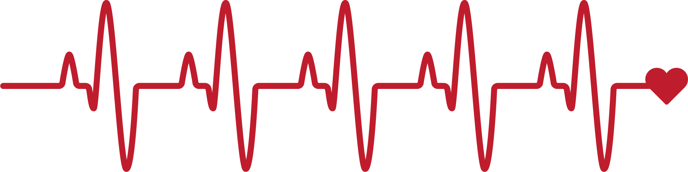

Signos vitales


Los signos vitales son mediciones de las funciones básicas más esenciales del cuerpo humano que reflejan el estado fisiológico actual y ayudan a detectar problemas de salud. Son indicadores objetivos fundamentales para evaluar el funcionamiento físico y diagnosticar enfermedades o emergencias.
Los principales tipos son la frecuencia cardíaca, que mide los latidos del corazón; la frecuencia respiratoria, que indica cuántas veces se respira por minuto; la temperatura corporal, que muestra el nivel de calor del cuerpo; y la presión arterial, que refleja la fuerza con la que la sangre circula por las arterias.
Cuidar los signos vitales depende mucho de los hábitos del día a día. Comer más balanceado, evitando tanta grasa, sal y azúcar, ayuda a prevenir problemas como la presión alta o el colesterol. También hacer ejercicio, aunque sea un poco todos los días, ayuda a que el corazón y la circulación funcionen mejor. Dormir bien, tomar suficiente agua y evitar cosas como el cigarro o el exceso de alcohol también hacen una gran diferencia para que el cuerpo se mantenga sano y en equilibrio.
¡Vive sano y feliz!